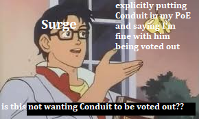

Can you direct me to this
it’s kind of a weird clear given that the thing I’m clearing him on is ‘literally did not interact in any way with the dead wolf,’ but
1 Like
But what?
Your open to options that aren’t Conduit because you don’t want Conduit lynched?

1 Like
Good night. I doubt I’ll be on at EoD today, but I’m satisfied about where my vote currently is.
The last time I death tunneled Arete on suspicions I was wrong, so why would I not be cautious this time around? I found it a possibility and wanted to explore it without going “Arete lockscum”
I feel dead inside, I, in all honesty should not be awake.
It is past 7 AM and I have not had any rest.
I likely will miss EoD.
Cloned, I know you want me to case you but honestly I think you trying to be overly contrarian and just go against the views of others to attempt to seem towny and independant is fishing for towncred. IDK, I could be off the mark but either way I will likely be either voted or not voted while I am gone.
If we are both alive D3, I will fully case you.
Also, welcome, Appel. I would love to hear your views whenever.
We have about an hour until EoD… 4 A.M… I can’t really deal with this at the moment, but I’m here regardless. @an_gorta_pratai @Conduit @Trochilidae @Appelsiini reminder to leave a vote by EoD or you’re lockscum (and also risk being replaced out)
alright i’m back for EoD
i can’t say how competent i’ll be, i’m sleep-deprived, irritated as hell, and dealing with Mental Things  but i am here.
but i am here.
get ninja’d looser
anyways, i still don’t think Conduit should be the lynch today.
but Tro, you ask, who should be instead?
well fuck, lemme gather my thoughts and see.
i would like someone to tell me why Conduit is scum instead of just lost newbie though, because to me his actions make more sense as the latter.
i’d like to discuss appeli’s slot though, i remember when i left last i was questioning them and now Appel is here instead.
i had put them fairly high in my townreads because Eli is fairly obvious as scum, he’s frozen as hell and can’t be bothered to post (no offense) and i hadn’t seen that in him. my only issue is their vanishing act today but i suppose that is now explained.
appel when you see this i would like your reads and take on the threadstate.
I feel like this is phrased very, very oddly.
Nonetheless, what is your most contrarian take, Tro?
gah, i don’t like this. you’d been scumreading Arete for so long, and then within the span of one post you suddenly do a 180? people had been giving these exact reasons for townreading Arete (myself included) and yet you’re just now giving them credence. this feels to me like a wolf realizing they done goofed with scumreading Arete for so long and is trying to rectify that with this post.
on the gorta vote, could you point out where they weren’t as committed to an Arete wagon as you were and explain a bit more how this makes them scum?
I just realized
did cloned admit to pushing agenda against Arete
if you haven’t learned i have a weird way of phrasing now i’ve got no hope for ya my dude
my most contrarian take you say? well, my top townreads are Arete and Seth (shared by yourself) with scumreads of cloned and Mole, which i don’t think are too contrarian either.
what was the purpose of asking this?
I feel like the second half of that sentence is relevant context
Oh god, oh god
I’m in class
Uh… I’ll see if I can make any reads before then.
/vote clonedcheese @CRichard564 @Zone_Q11
i really didn’t like that progression and how you’ve been handling Arete’s slot at all here tbh.
It is indeed.
@clonedcheese this is the second “Slayer’s Gambit”-esqe play we’ve seen this game. You seemed… very committed to your read all day, and I’m failing to see how making yourself intentionally unreadable is a good thing. Do you have any proof that you didn’t just backpedal like shit when you saw that Arete wasn’t taking off a wagon?
read post 
I was convinced aroot town since about 6 hours before that post
look a few posts after my posts, there’s one that gorta says “well cloned has a point in that they might be bussing wazza”
Yes
to see who would fall for it
gorta kinda did?
My goal was to see who would be trying to actively sus Arete here
I enjoy how troch and light both to be thinking on the same wavelength here
however that wavelength is alpha
meaning it’s ungood